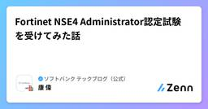
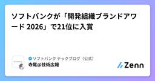
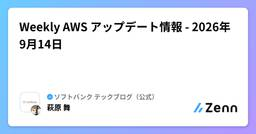

ソフトバンク テックブログ（公式）のフィード
https://zenn.dev/p/softbank
ソフトバンクのエンジニアが、ソフトバンクの業務・サービスを支える技術をテーマに、現場の知見や取り組みを発信する技術ブログです。 2026年３月以前のブログ https://www.softbank.jp/biz/blog/cloud-technology/
フィード

Fortinet NSE4 Administrator認定試験を受けてみた話
ソフトバンク テックブログ（公式）のフィード
はじめにこんにちは。ソフトバンクのKANGです。2026年4月からネットワーク関連の部署に異動し、業務でネットワークやセキュリティに触れる機会が増えました。一方で、異動前はセキュリティやファイアウォールに関する実務経験がほとんどなく、 「ファイアウォールって、具体的に何を設定するんだろう？」 「FortiGateを体系的に勉強するには、何から始めればいいんだろう？」という状態からのスタートでした。そこで、業務でも関わる機会のあるFortinet製品について体系的に学ぶことを目的に、Fortinetの認定資格取得にチャレンジすることにしました。そして2026年9月7日...
2日前

ソフトバンクが「開発組織ブランドアワード 2026」で21位に入賞
ソフトバンク テックブログ（公式）のフィード
一般社団法人 日本CTO協会が実施する「開発組織ブランド力調査」において、ソフトバンクが「開発組織ブランドアワード 2026」の21位に入賞しました。「開発組織ブランド力調査」は、各社の開発組織がエンジニアからどの程度認知され、魅力的な組織として捉えられているかを可視化・ランキングする調査で、今回で5年目となります。ソフトバンクは2024年の同ランキングで初めて30位にランクインし、2026年は21位にランクアップすることができました。開発組織の認知や魅力は、日々の技術開発だけでなく、研究開発の成果や技術情報の発信、エンジニア同士の交流など、さまざまな接点を通じて形成されていくも...
4日前

Weekly Google Cloud アップデート情報 - 2026年9月15日
ソフトバンク テックブログ（公式）のフィード
Weekly Google Cloud アップデート情報 - 2026年9月15日皆さま、こんにちは。先週 (2026/09/04 - 2026/09/10) の主な Google Cloud（旧GCP）のアップデート情報を紹介します。※本記事の引用元:Google Cloud リリースノート 注目のアップデートGemini Enterprise: プロジェクトの作成と管理Gemini Enterprise ウェブアプリでは、プロジェクトを作成および管理して、自身の業務向けの専用ナレッジベースを構築したり、チームと共同作業を行ったりすることが可能です。プロジェクト内...
5日前

Weekly AWS アップデート情報 - 2026年9月14日
ソフトバンク テックブログ（公式）のフィード
皆さま、こんにちは。Weekly AWSでは、毎週 AWS プロダクトのアップデート情報をお届けしています。それでは、先週 (9月7日～13日) の主な AWS アップデート情報を紹介します。 今週の注目アップデート Amazon Quick が、常時稼働エージェント、フィード強化、エンタープライズ向け管理機能の追加Amazon Quick に、作業の整理、組織全体のガバナンス、信頼性の高い回答の生成を容易にする新機能が追加されました。今回のアップデートには、エンタープライズグレードの管理、豊富なコラボレーション、常時稼働のインテリジェンスが含まれます。主な新機能は以下...
6日前

Weekly Azure アップデート情報 - 2026/09/04
ソフトバンク テックブログ（公式）のフィード
Weekly Azure アップデート情報 - 2026/09/04 ～[一般公開] Azure Copilot がエージェントへの直接アクセスを導入～皆さま、こんにちは。Weekly Azure では、今週もMicrosoft Azureのプロダクトアップデート情報をお届けします。先週 (2026/08/21 - 2026/08/27) の主な Azure アップデート情報をお送りいたします。 今週の注目アップデート ・[一般公開] Azure Copilot がエージェントへの直接アクセスを導入Azure Copilot において、エージェントへの直接アクセス...
6日前

Weekly Azure アップデート情報 - 2026/08/25
ソフトバンク テックブログ（公式）のフィード
Weekly Azure アップデート情報 - 2026/08/25 ～[プレビュー] Azure App Service のエージェント向け Markdown～皆さま、こんにちは。Weekly Azure では、今週もMicrosoft Azureのプロダクトアップデート情報をお届けします。先週 (2026/08/14 - 2026/08/20) の主な Azure アップデート情報をお送りいたします。 今週の注目アップデート ・[プレビュー] Azure App Service のエージェント向け MarkdownAzure App Service におけるエ...
9日前
【AI VS 津軽弁】AIに「おばあちゃんの津軽弁」を聴かせてみたら未知の言語が爆誕した話
ソフトバンク テックブログ（公式）のフィード
1. はじめにこんにちは、ソフトバンクの花立千紘です。突然ですが、皆さんは青森県の人が話す「津軽弁」を聴いたことがありますか？ネットやテレビではよく「もはやフランス語や韓国語に聞こえる」などとネタにされがちです。しかし、生まれは青森・育ちは完全な神奈川県である私（津軽弁ヒアリングレベル3割）は思いました。「人間には外国語に聞こえても、最新AIならどんなに激しい訛りでも『日本語』として完璧に聞き取れるのでは？」そこで前回の帰省時、おばあちゃんにスマートフォンを渡し、検証を行ってみました。!※本記事は執筆時点（2026年8月）の情報を元に作成しています。 2. 検証...
11日前
「人間だけを前提にしたWeb」は変わっていく。AIエージェント時代のデジタルアイデンティティー
ソフトバンク テックブログ（公式）のフィード
MyData Japan 20262026年7月29日、一橋講堂で開催された MyData Japan 2026 - Revisiting MyData - に参加しました。MyData Japanは、個人を起点とした持続可能かつ倫理的なデータ活用について議論するカンファレンスです。2026年のテーマは「Revisiting MyData」です。AIエージェントの台頭や個人情報保護法の改正など、データを取り巻く環境が大きく変わる中で、あらためて「人間中心のデータエコシステムとは何か」を問い直すことがテーマになっています。この記事では、その中でも特に気になっていたTrack A...
12日前
Weekly Google Cloud アップデート情報 - 2026年9月8日
ソフトバンク テックブログ（公式）のフィード
Weekly Google Cloud アップデート情報 - 2026年9月8日 ～ Gemini Enterprise: コンテンツポリシーで機密データを保護 ～皆さま、こんにちは。先週 (2026/08/28 - 2026/09/03) の主な Google Cloud（旧GCP）のアップデート情報を紹介します。※本記事の引用元:Google Cloud リリースノート 注目のアップデートGemini Enterprise: コンテンツポリシーで機密データを保護Sensitive Data Protection コンテンツポリシーを Gemini Enterpri...
12日前
Weekly AWS アップデート情報 - 2026年9月7日
ソフトバンク テックブログ（公式）のフィード
皆さま、こんにちは。Weekly AWSでは、毎週 AWS プロダクトのアップデート情報をお届けしています。それでは、先週 (8月31日～9月6日) の主な AWS アップデート情報を紹介します。 今週の注目アップデート Amazon Quick が、自然言語でカスタムアプリケーションを構築可能にAmazon Quick で、自然言語で説明するだけでカスタムアプリケーションを構築できる機能が一般提供されました。これにより、プロジェクトトラッカー、顧客ダッシュボード、トレーニングポータルなどを、コードを記述することなく数分で作成可能です。Quick は、Salesforc...
13日前
Gemini Enterprise ワークフロービルダーをさっそく触ってみた ― "人間の判断も入れられるWFに生まれ変わった"
ソフトバンク テックブログ（公式）のフィード
1. はじめにGemini Enterprise（以下、GE）ワークフロービルダーの、”ワークフロー機能”（Workflows、旧Agent Designer V3とも表現）を動かしました。この記事では、実際の画面で確認できたことと、私が作ったワークフロービルダーの一例を紹介します。まだ触り始めて間もない段階での所感です。そのうえで先に結論を書くと、これは単なるノーコードエージェントの新バージョンではありません。エージェントをワークフロー形式で作り動かすことができる新しい機能として捉えております。※ワークフロービルダーは9/3に一般提供（GA）されています。本記事の内容は 20...
15日前
「デザインハーネス 2nd」にソフトバンクのUI/UXデザイナー窪内彩佳が登壇します！
ソフトバンク テックブログ（公式）のフィード
「デザインハーネス 2nd」にソフトバンクのUI/UXデザイナー窪内彩佳が登壇します！2026年9月15日（火）に開催される「デザインハーネス 2nd 〜デザインにおけるハーネスエンジニアリング〜」に、ソフトバンク株式会社のUI/UXデザイナー 窪内彩佳が登壇します。本記事では、イベントの概要と窪内の登壇内容を紹介します。 イベント概要「デザインハーネス」は、AIエージェントの力を人の判断で方向付けながら、デザインプロセスを前に進めるための考え方です。デザインシステムや設計知識、検証、ワークフローなどを組み合わせ、プロダクトやサービスのデザインをAIエージェントと共に進め...
17日前
Weekly AWS アップデート情報 - 2026年8月31日
ソフトバンク テックブログ（公式）のフィード
皆さま、こんにちは。Weekly AWSでは、毎週 AWS プロダクトのアップデート情報をお届けしています。それでは、先週 (8月24日～30日) の主な AWS アップデート情報を紹介します。 今週の注目アップデート Amazon Redshift が Agent Toolkit for AWS と統合し、AI によるデータウェアハウス管理を支援Amazon Redshift が Agent Toolkit for AWS と統合されました。これにより、Claude Code、Kiro、Cursor などの AI エージェントから直接、Amazon Redshift デ...
18日前
Weekly Google Cloud アップデート情報 - 2026年9月1日
ソフトバンク テックブログ（公式）のフィード
Weekly Google Cloud アップデート情報 - 2026年9月1日皆さま、こんにちは。先週 (2026/08/21 - 2026/08/27) の主な Google Cloud（旧GCP）のアップデート情報を紹介します。※本記事の引用元:Google Cloud リリースノート 注目のアップデートGemini Enterprise: 標準エマージングマーケット版での AI 開発者向けツールGemini Enterprise Standard エマージングマーケット版では、AI 開発者向けツール機能が利用可能です。機能にアクセスするには、プロジェクトを、毎...
18日前
Weekly Azure アップデート情報 - 2026/08/19
ソフトバンク テックブログ（公式）のフィード
Weekly Azure アップデート情報 - 2026/08/19 ～[一般公開] Azure Databricks の Unity AI Gateway が一般提供開始～皆さま、こんにちは。Weekly Azure では、今週もMicrosoft Azureのプロダクトアップデート情報をお届けします。今回は先々週および先週の2週間分 (2026/07/24 - 2026/08/13) の主な Azure アップデート情報をお送りいたします。 今週の注目アップデート ・[一般公開] Azure Databricks の Unity AI Gateway が一般提供開...
18日前
Weekly Google Cloud アップデート情報 - 2026年8月25日
ソフトバンク テックブログ（公式）のフィード
Weekly Google Cloud アップデート情報 - 2026年8月25日皆さま、こんにちは。先週 (2026/08/14 - 2026/08/20) の主な Google Cloud（旧GCP）のアップデート情報を紹介します。※本記事の引用元:Google Cloud リリースノート 注目のアップデートGemini Enterprise: A2UI および A2A エージェント登録の一般提供開始Gemini Enterprise で、A2UI および A2A エージェントの登録が一般提供されました。これには、A2UI バージョン v0.9 のサポートも含まれ...
25日前
Weekly AWS アップデート情報 - 2026年8月24日
ソフトバンク テックブログ（公式）のフィード
皆さま、こんにちは。Weekly AWSでは、毎週 AWS プロダクトのアップデート情報をお届けしています。それでは、先週 (8月17日～23日) の主な AWS アップデート情報を紹介します。 今週の注目アップデート IAM Policy Autopilot が、Terraform plan ファイルに対応IAM Policy Autopilot が、Terraform plan ファイルから直接ベースライン IAM ポリシーを生成できるようになりました。IAM Policy Autopilot は、re:Invent 2025 で発表されたオープンソースツールで、コー...
25日前
AIとの対話履歴を資産にする。DDR（Design Decision Record）自動記録の仕組み
ソフトバンク テックブログ（公式）のフィード
はじめにこんにちは！ソフトバンク社内のデザインチームに所属しているデザイナーの窪内です。私たちのチームでは、デザインプロセスにAIを活用し、AIチャットやAIコーディングツールを使ってデザインをする機会が増えています。この記事を読んでくださっている方の中にも、AIとの対話の中で提案や修正指示をしながらデザインされている方がいらっしゃると思います。しかし、最終的なデザインだけが残り、「なぜそのような修正をしたのか、なぜその案を採用したのか、どの案を検討して見送ったのか」といった「意思決定」が後からたどれない、といったことはないでしょうか。私たちのチーム内でも、あるプロダクトの...
1ヶ月前
Weekly Azure アップデート情報 - 2026/08/05
ソフトバンク テックブログ（公式）のフィード
Weekly Azure アップデート情報 - 2026/08/05 ～[プレビュー] Azure API Management の AI Gateway～皆さま、こんにちは。Weekly Azure では、今週もMicrosoft Azureのプロダクトアップデート情報をお届けします。先週 (2026/07/17 - 2026/07/23) の主な Azure アップデート情報をお送りいたします。 今週の注目アップデート ・[プレビュー] Azure API Management の AI GatewayAzure API Management の AI Gat...
1ヶ月前
Weekly Google Cloud アップデート情報 - 2026年8月18日
ソフトバンク テックブログ（公式）のフィード
Weekly Google Cloud アップデート情報 - 2026年8月18日皆さま、こんにちは。先週 (2026/08/07 - 2026/08/13) の主な Google Cloud（旧GCP）のアップデート情報を紹介します。※本記事の引用元:Google Cloud リリースノート 注目のアップデートGemini Enterprise: カスタムスキルの作成、アップロード、共有Gemini Enterprise では、カスタムスキルを作成、アップロード、共有することが可能です。スキルは、Gemini Enterprise アシスタントが特定のタスクを実行...
1ヶ月前